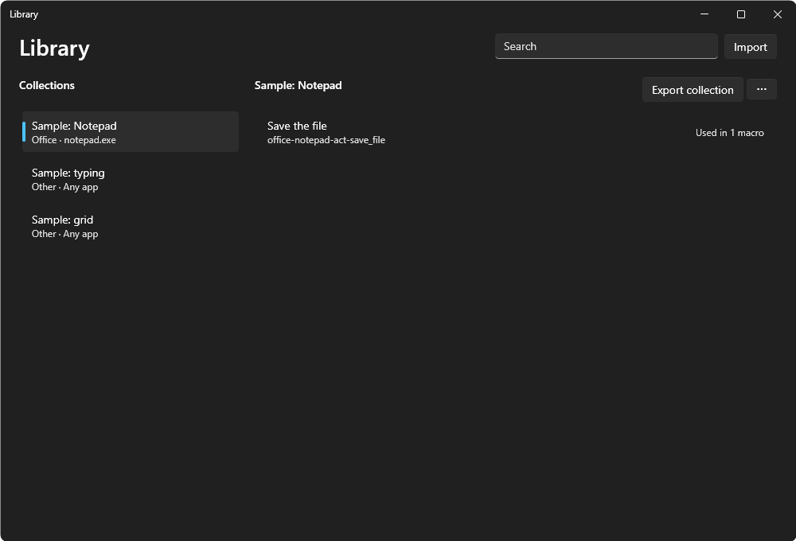

The Library keeps the pieces of macros that work, to use them again in other macros: how to find a button in your accounting app, where each slot of a game's inventory is, a few steps that save a file. Each piece is a component, and components are kept in collections, one for each app and screen (for example Diablo IV 5120×1440 or Excel). Select Library on the Macros page to open it.

The Library: collections on the left, their components on the right.
Save a piece as a component
In the macro editor, select the rows that work together, one after the other in the same list.
Select Save as component… in ⋯ or in the right-click menu.
Give it a Name (what you read in the Library and in the macro), choose What it does and the Collection: one you have, or New collection with its Kind of app, its App (the app's .exe, empty for any app) and the Screen PuppyMacro reads from your monitor. The Concept (in English, filled in from the name) and the Description are what AI apps search by.
Select Save. The component is in the Library at once, and the selected rows become one row linked to it.
A component holds the actions as they are, also an If with its Then and Else, and other linked components. A click "where … was found" uses a condition inside the same component: when the selected rows use a place found by a condition outside them, Save as component makes it a parameter, and the new row passes that place on.
Use a component in a macro
In the macro editor, select Component (the + button next to Condition). The Library opens: check the components you want and select Add linked. Each one comes in as a linked row: one greyed line with the component's name, its collection and how many actions it has.
A linked row plays the component as it is in the Library when the macro starts. When the component changes, every macro that links it plays the new one.
It has no wait of its own: the component's first action has one. It can be moved, copied and deleted like any row; inside the macro only its values change.
Edit, or a double-click on it, opens the component read only: its collection, the macros that use it and what it plays, with Unlink this row and Open in Library.
Unlink turns the row into the component's actions as they are now, normal rows of this macro that you can change, with the row's values in their fields. The components inside stay linked. To link it again, add it with Component.
Test on a linked row plays the component.
A macro that links a component the Library doesn't have any more can't play and can't be saved until you delete that row or link another component.
Parameters: one component for every slot
A component can take values from the row that calls it, its parameters. A game's inventory with 33 slots needs one component, Strip one slot, with a parameter Slot: each of the 33 rows gives its own slot. When you fix the component, all 33 rows play the fix.
Edit next to a component in the Library opens it in the macro editor: its actions on the left, and on the right What it does, its Parameters and whether it Can be used as a condition.
Add parameter gives it a Name (letters, digits and _), a Type (Point, Number with its Unit, Text, Key, Color, Image, Area or Grid), an Example and, with Every call gives a value off, a Default for the rows that leave it out.
In the component's action window, a field that a parameter can fill has a list before it: A value, or From a parameter of its type. A click's Position lists the Point parameters next to Fixed point. The field holds the parameter's example, which a Test plays.
A linked row of a component with parameters shows its values. Opening it shows Arguments, one card per parameter: A value (with Pick on screen for a point), the default, inside a component one of its own parameters, or for a point Where … was found, the place a condition around the row found this time.
A component can call other components, never in a loop and at most 10 levels deep.
Grids: cells all alike in rows
An inventory, a keypad, a gallery of pictures or a sheet's cells are cells all alike, in rows and columns the same distance apart. A Grid parameter describes them once, and a call then only says which cell: Slot 23 instead of its point.
Its value is the First cell (the point to use in the cell at the top left), the Last cell (the same point in the cell at the bottom right), the Columns and the Rows, each point with Pick on screen. The card says how many cells it has and where the last one is.
Cells are counted row by row from the top left, starting at 1. The step from one cell to the next is the distance from the first to the last divided evenly, so it can have decimals (73.5 pixels); each point is rounded to the nearest pixel.
Show the cells shows every cell's point over a picture of the screen, with its number, until you click or press Esc: a quick way to check the grid.
In the component's actions, a click's, a mouse button's or a move's Position, and a pixel's point, list A cell of each Grid parameter. The Cell card under it takes a number, or From a Number parameter of unit Count, so each row gives its own cell.
Two kinds of points in the same slots, such as where to read a color and where to click, are two Grid parameters used with the same cell.
Every call is checked with its values: a cell its grid doesn't have can't be saved, and a macro with such a call can't play. A component whose Example or Default grid doesn't have one of its cells can't be saved either.
Unlink turns the cell into its point. It is refused when the cell isn't in the grid, and when the grid is a value but the cell comes from a parameter of the component around the row: a normal row can't choose a cell.
Can be used as a condition with What it finds (one of its conditions) makes the component a condition too: in an If, Add condition › Condition from component. It is true when the condition it finds is, checked as any condition with the If's wait, and a click "where … was found" goes where it found it.
When a change to a component's parameters affects the rows that call it (a new parameter every call gives, one removed, another type), Save shows This change updates the calls: one value for all the calls that need it, the parameters taken out and the macros that change. Update and save saves the component and the calls together; if something can't be saved, nothing changes. Renaming a parameter keeps each call's value.
The Library
The Library shows the collections on the left and the components of the selected one on the right, each with its name, the name AI apps search by (for example game-diablo_iv-find-rare_item_in_slot) and how many macros and other components use it ("Used in 2 macros and 1 component", or "Not used"). The window of a linked row names them. Search finds components by any of their names and descriptions. A selected component shows what it plays and:
Edit: its actions, parameters and what it finds, in the macro editor.
Edit details: its name, what it does, its concept and description.
History: its versions, as an item's History; Restore this version puts one back at once, for every macro that links it.
Delete: only when nothing uses it: no macro links it, also the macro open in the editor, and no other component calls it. Otherwise Delete is off, and its tooltip names the macros and components that use it.
⋯ next to a collection renames or deletes it. Delete collection is off while a macro links one of its components or a component of another collection calls one, and its tooltip names them. The Library can't change while a loop or macro is running.
Share a collection
Export collection saves a collection, whole, in a .puppyitems file with its images, and the collections its components call. A macro exported from its card or with Export takes the collections it links along. On another PC, Import (in the Library or in the title bar's ⋯) adds the collections it doesn't have yet, then the chosen items.
A collection is shared whole and is never split. A collection the Library already has, with the same content, is left as it is (a different name alone is the same content).
When the file holds a different version of a collection you have, nothing is imported, and Import says which one. To import it, delete your collection first, if no macro uses it, or ask for a file made from your version.
A component's points are those of the screen its collection was made on. On another monitor, resolution, position or scale, they need changing.
The Library and AI apps
AI apps search the Library before building a macro and link what already works, and save the pieces that work as components, with names in English they search by later. So the more you build with your AI app, the more your Library knows about your apps. See AI apps.